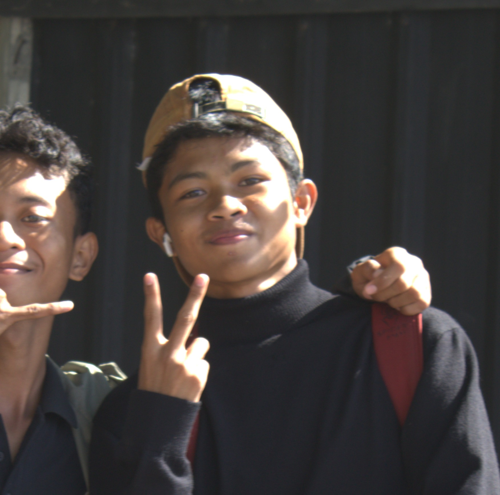

Pengembangan Software
Membangun aplikasi, website, API, dan sistem digital dengan memperhatikan kegunaan serta pengalaman pengguna.

Muhammad Daffa Ramadhan · Heroikzre
Pelajar, pengembang teknologi, dan inovator digital dengan minat pada software development, kecerdasan buatan, riset terapan, serta produk digital.
Muhammad Daffa Ramadhan dikenal secara digital dengan nama Daffa Heroik atau Heroikzre. Ia adalah pelajar yang mengembangkan minat dan karya di persimpangan teknologi, kreativitas, dan pemecahan masalah. Fokus kegiatannya mencakup membangun aplikasi dan layanan digital, mengeksplorasi kecerdasan buatan, serta mengembangkan gagasan inovasi teknologi.
Membangun aplikasi, website, API, dan sistem digital dengan memperhatikan kegunaan serta pengalaman pengguna.
Mengeksplorasi AI, machine learning, dan penerapan model cerdas pada produk digital maupun perangkat.
Mengembangkan gagasan teknologi terapan dan prototipe untuk menjawab kebutuhan nyata.
Mempelajari pengembangan produk, model bisnis, dan keberlanjutan layanan berbasis teknologi.
Ekosistem layanan pembayaran digital dan perangkat pendukung transaksi.
Kunjungi proyek →Eksplorasi layanan gateway AI untuk menghubungkan aplikasi dengan berbagai model.
Kunjungi proyek →Proyek aplikasi pemutar musik dan pengalaman audio digital.
Kunjungi proyek →